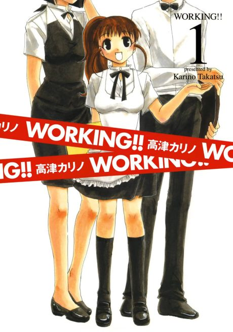

Anime
Anime
Manga2010 · Comedy, Slice of Life
Wagnaria!!
WORKING!!
AniList7.4
Animeter—
3 seasons39 ep
MangaDone
Anime finished. Where does the manga pick up?
StatusFully adapted
Season 3 and its one-hour finale close out the story; no source gives chapter numbers.